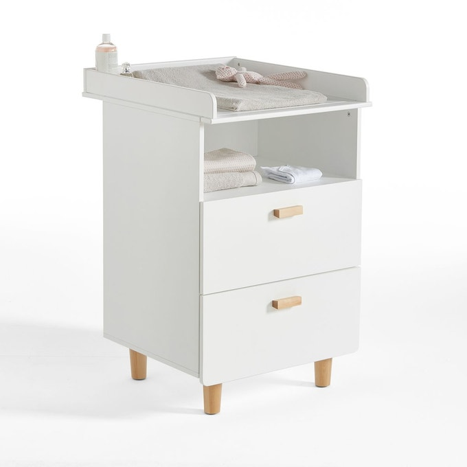
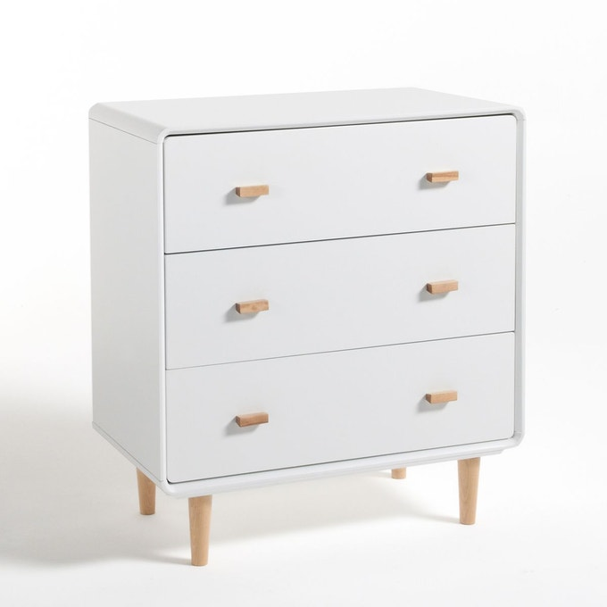
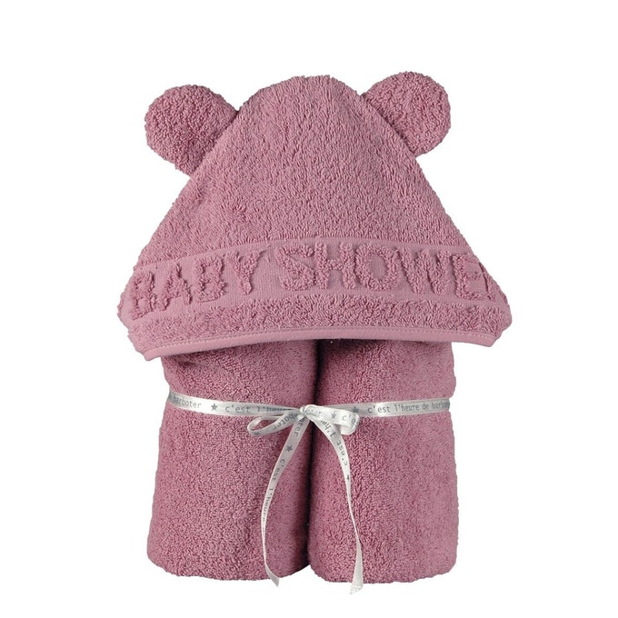
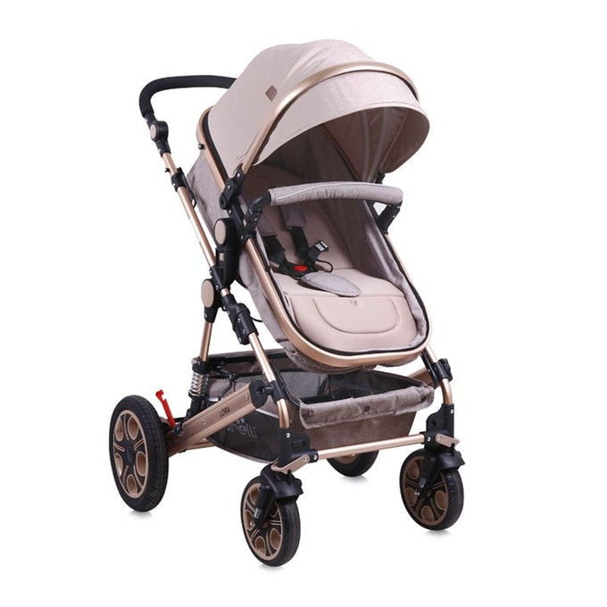

Urgent
A acheter
Déjà selectionné
Déjà acheté
| Objet | Visuel | Description | |
|---|---|---|---|
| Ma chambre | Lit | |
Un sommier réglable en hauteur et un confort adapté au sommeil des bébés, le lit Jimi de style scandinave répond aux attentes des plus exigeants. Fabrication européenne. Description du lit bébé Jimi : • Couchage 60 x 120 cm • Livré avec sommier réglable en hauteur (3 positions) |
| Table à langer |  | Pratique avec son plan à langer amovible et l'espace de rangement des 2 tiroirs. Description de la table à langer Jimi : • 2 tiroirs • 1 niche • Plan à langer amovible • Matelas à langer non fourni Caractéristiques de la table à langer Jimi : • MDF laqué finition acrylique • Pieds et poignées en bois et pin massif | |
| Commode |  | La commode 3 tiroirs Jimi suit la tendance scandinave avec son mélange de bois clair et de blanc. Petite note vintage : les pieds fuselés en bouleau. Descriptif de la commode 3 tiroirs Jimi : • 3 tiroirs • Pieds fuselés Caractéristiques de la commode 3 tiroirs Jimi : • MDF laqué nicrocellulosique • Pieds en bouleau massif | |
| Ma toilette | Baignoire |
| La baignoire bébé premier âge Camélé’o Béaba offre à bébé un confort optimal grâce à ses formes rondes et sa matière souple et antidérapante. Elle est idéale pour les petits espaces et les déplacements. Caractéristiques de la baignoire bébé premier âge Camélé’O Béaba : • Facile à transporter grâce à ses larges rebords. • Bouchon de vidange. • Support pommeau de douche latéral. • Taille unique. • Dimensions : L82 x H29 x P55 cm,. • Poids : 2,75 kg |
| Sortie de bain |  | Adorable cape de bain bébé avec ses petites oreilles d'ours et son liteau jacquard BABYSHOWER. Sobre et originale, en éponge bien épaisse en coton issu de l'agriculture biologique, c'est LE cadeau de naissance par excellence. Cette sortie de bain est en éponge ultra douce et moelleuse en coton issu de l'agriculture biologique. Poids : 550 g par m2. Elle est de forme rectangulaire avec la capuche centrée au milieu. Dimensions hors capuche : 60 x 120 cm | |
| Mes sorties | Poussette |  | Caractéristiques : - Amortisseurs - Couvre-jambes - Auvent pliable - Sac - Cadre en aluminium - Grand panier - Roues avant pivotantes - Panier nouveau-né transformable en siège - Pneus gonflables - Siège réversible - Ceinture de sécurité 5 points - Adaptateurs pour siège-auto -Siège auto avec couvre-jambes - Pliable à taille compacte - Poignée réglable en hauteur |
| Lit pliant | |
Lit pliant bébé avec roulettes adèle & valentine gris NATTOU Lit d'appoint de la collection Adèle & Valentine créé par Nattou se range très facilement, ce qui vous permet d'emmener bébé partout avec vous ! Le lit est confortable, muni d'un zip pour que votre enfant est plus de liberté. Dimensions : 120 x 60 x 75 cm Dimensions du matelas (inclus) : 60 x 120 cm Sac de transport inclus Utilisable dès la naissance et jusqu'à 15 kg |